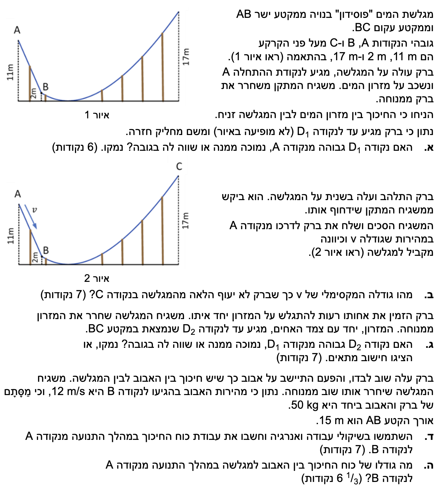
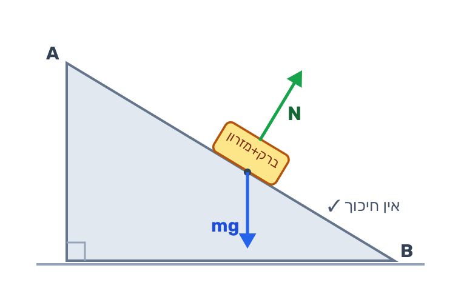
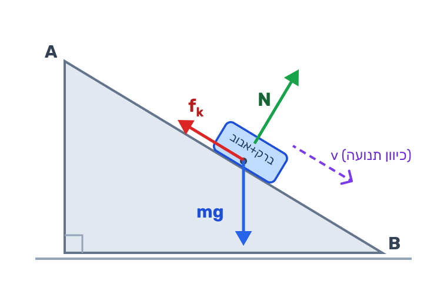

פתרון מודרך בפיזיקה: עבודה ואנרגיה
מכניקה, 5 יח"ל | שאלה על בסיס משר 2024
פתרון מלא ומוסבר צעד-אחר-צעד, עם דגשים פדגוגיים וחשיבה פיזיקלית מסודרת.
עודכן:
--- --:--:--
מבט כללי על השאלה
השאלה בנויה משני רעיונות פיזיקליים מרכזיים. בסעיפים א'-ג' החיכוך זניח, ולכן הרעיון השולט הוא שימור אנרגיה מכנית: אם הגוף יוצא ממנוחה וחוזר לרגע למנוחה, הגובה שבו הוא עוצר נקבע רק לפי האנרגיה ולא לפי המסה.
בסעיפים ד'-ה' נוסף חיכוך בין האבוב למגלשה. כאן האנרגיה המכנית כבר אינה נשמרת, ולכן נחשב את עבודת החיכוך מן השינוי באנרגיה המכנית, ואז נעבור מן העבודה אל גודל הכוח.
שימו לב לרעיון החוזר: כשאין חיכוך, המסה מצטמצמת מן המשוואות; כשיש חיכוך, סימן העבודה מלמד אותנו אם הכוח מוסיף אנרגיה למערכת או גורע ממנה.

תמונת השאלה המקורית
לא נמצאה תמונה בשם question-image.png באותה תיקייה.
מה נתון: גובה הנקודה A מעל הקרקע הוא 11 m. ברק משתחרר ממנוחה, לכן vA = 0. בנקודה D1 הוא מגיע לרגע של עצירה לפני שהוא מחליק חזרה, לכן גם שם vD1 = 0. החיכוך בין המזרון למגלשה זניח, ולכן אין איבוד אנרגיה מכנית.
מה מחפשים: לקבוע אם הנקודה D1 גבוהה מן הנקודה A, נמוכה ממנה או שווה לה בגובה.
נוסחאות ועקרונות בשימוש:
\( E_k = \frac{1}{2}mv^2 \)
\( U = mgh \)
עיקרון: כאשר החיכוך זניח, האנרגיה המכנית נשמרת, כלומר סכום האנרגיה הקינטית והפוטנציאלית נשאר קבוע לאורך התנועה.
תרשים כוחות סכמטי במצב החלק. התרשים הזה ישמש אותנו גם בסעיפים ב'-ג', כי שם החיכוך זניח.

פתרון צעד-אחר-צעד:
שלב 1: כותבים אנרגיה בתחילת התנועה ובנקודת הקיצון
בתחילת התנועה ברק נמצא במנוחה בנקודה A, ולכן האנרגיה שלו היא פוטנציאלית בלבד. גם בנקודה D1 הוא נעצר לרגע לפני שהוא מחליק חזרה, ולכן גם שם האנרגיה היא פוטנציאלית בלבד.
\[
E_{k,A} + U_A = E_{k,D_1} + U_{D_1}
\]
\[
0 + mg h_A = 0 + mg h_{D_1}
\]
שלב 2: מצמצמים את הגורמים המשותפים
בשני האגפים מופיע הגורם mg, ולכן מחלקים את שני האגפים ב-mg ומקבלים ישירות שוויון גבהים:
\[
h_A = h_{D_1}
\]
\[
h_{D_1} = 11.0\,\text{m}
\]
מסקנה: הנקודה D1 שווה בגובהה לנקודה A, ולכן hD1 = 11.0 m.
טיפ מורה: זהו מקום קלאסי לטעות אינטואיטיבית. קל לחשוב שברק יגיע נמוך יותר כי הוא כבר "עשה דרך", אבל בלי חיכוך הדרך עצמה לא מבזבזת אנרגיה. מה שקובע הוא רק מצב ההתחלה ומצב הסיום, ולכן אם התחיל ממנוחה וסיים ברגע של מנוחה, הוא חייב לחזור בדיוק לאותו גובה.
מה נתון: גובה הנקודה A הוא 11 m, וגובה הנקודה C הוא 17 m. החיכוך עדיין זניח. המשגיח שולח את ברק מנקודה A במהירות התחלתית v שמקבילה למגלשה. נשתמש גם ב-g = 10 m/s2.
מה מחפשים: את הערך המקסימלי של v כך שברק לא יעוף הלאה מן המגלשה בנקודה C.
נוסחאות ועקרונות בשימוש:
\( E_k = \frac{1}{2}mv^2 \)
\( U = mgh \)
עיקרון: במקרה הסף שבו ברק בדיוק לא יעוף מהמגלשה, הוא מגיע לנקודה C עם מהירות אפס. אילו הייתה לו שם מהירות חיובית, הוא היה ממשיך הלאה אחרי קצה המגלשה.
פתרון צעד-אחר-צעד:
שלב 1: כותבים את תנאי הסף בנקודה C
במקרה המקסימלי המותר, ברק מגיע לנקודה C בדיוק ועוצר שם לרגע. לכן נכתוב vC = 0. כעת נשווה את האנרגיה המכנית בתחילת התנועה ובנקודה C.
\[
E_{k,A} + U_A = E_{k,C} + U_C
\]
\[
\frac{1}{2}mv^2 + mg \cdot 11 = 0 + mg \cdot 17
\]
שלב 2: מסדרים אלגברית
נעביר את איבר האנרגיה הפוטנציאלית של נקודה A לאגף ימין. אחר כך נחלק ב-m, כך שהמסה תצטמצם משני האגפים.
\[
\frac{1}{2}mv^2 = mg(17-11)
\]
\[
\frac{1}{2}v^2 = 10 \cdot 6 = 60
\]
\[
v^2 = 120
\]
\[
v = \sqrt{120} = 10.954\ldots\,\text{m/s}
\]
מסקנה: המהירות המקסימלית היא vmax = 11.0 m/s.
טיפ מורה: שימו לב מה לא צריך לדעת כאן: לא צריך את צורת הקטע BC, לא את רדיוס העקמומיות שלו ולא את המסה של ברק. כל מה שקובע במקרה הזה הוא הפרש הגבהים בין A ל-C ותנאי הסף של מהירות אפס בקצה המגלשה.
מה נתון: ברק ואחותו רעות מתגלשים יחד על אותו מזרון. החיכוך עדיין זניח. הם משתחררים ממנוחה מן הנקודה A ומגיעים עד לנקודה D2 במקטע BC, שבה הם נעצרים לרגע לפני חזרה. נסמן את מסת המערכת כולה באות M.
מה מחפשים: לקבוע אם הנקודה D2 גבוהה מן D1, נמוכה ממנה או שווה לה בגובה.
נוסחאות ועקרונות בשימוש:
\( E_k = \frac{1}{2}mv^2 \)
\( U = mgh \)
עיקרון: כאשר אין חיכוך, גם כאן האנרגיה המכנית נשמרת. אם המסה מופיעה בכל איבר, היא מצטמצמת ולכן אינה משפיעה על הגובה הסופי.
פתרון צעד-אחר-צעד:
שלב 1: כותבים שימור אנרגיה למערכת כולה
המערכת היא עכשיו "מזרון + ברק + רעות". בתחילת התנועה המערכת במנוחה, וגם בנקודה D2 היא במנוחה רגעית. לכן בשני המצבים יש לנו רק אנרגיה פוטנציאלית כבידתית.
\[
E_{k,A} + U_A = E_{k,D_2} + U_{D_2}
\]
\[
0 + Mg h_A = 0 + Mg h_{D_2}
\]
שלב 2: מצמצמים את M ואת g
כיוון ש-M ו-g מופיעים בשני האגפים, נחלק את המשוואה ב-Mg ונקבל שוב שוויון גבהים.
\[
h_{D_2} = h_A = 11.0\,\text{m}
\]
מסעיף א' כבר מצאנו כי hD1 = 11.0 m. לכן שני הגבהים שווים זה לזה.
מסקנה: הנקודה D2 שווה בגובהה לנקודה D1, ולכן hD2 = hD1 = 11.0 m.
טיפ מורה: זהירות מתפיסה שגויה נפוצה: "אם המערכת כבדה יותר, היא תעלה פחות גבוה". הטענה הזו הייתה יכולה להיות נכונה אילו היה חיכוך משמעותי התלוי במסה, אבל כאן החיכוך זניח. גם האנרגיה ההתחלתית וגם האנרגיה הפוטנציאלית בסוף פרופורציוניות למסה, ולכן המסה פשוט מצטמצמת מן המשוואה.
מה נתון: ברק יושב על אבוב ויש חיכוך בין האבוב למגלשה. הוא משתחרר ממנוחה בנקודה A, לכן vA = 0. מהירותו בנקודה B היא 12 m/s. המסה הכוללת של ברק והאבוב היא 50 kg. גובהי הנקודות הם hA = 11 m ו-hB = 2 m. נשתמש ב-g = 10 m/s2.
מה מחפשים: את עבודת כוח החיכוך במהלך התנועה מן הנקודה A אל הנקודה B.
נוסחאות ועקרונות בשימוש:
\( E_k = \frac{1}{2}mv^2 \)
\( U = mgh \)
עיקרון נוסף: כאשר קיים חיכוך, השינוי באנרגיה המכנית בין ההתחלה לסוף שווה לעבודת החיכוך, מפני שזהו הכוח הלא משמר שפועל לאורך המסלול.
תרשים כוחות סכמטי במקטע המחוספס AB. התרשים הזה ישמש אותנו גם בסעיף ה'.

פתרון צעד-אחר-צעד:
שלב 1: מחשבים את האנרגיה המכנית בנקודה A
בנקודה A ברק משתחרר ממנוחה, לכן האנרגיה הקינטית ההתחלתית היא אפס. נשארת רק אנרגיה פוטנציאלית כבידתית.
\[
E_{\text{mech},A} = E_{k,A} + U_A = 0 + mgh_A
\]
\[
E_{\text{mech},A} = 50 \cdot 10 \cdot 11 = 5500\,\text{J}
\]
שלב 2: מחשבים את האנרגיה המכנית בנקודה B
בנקודה B יש גם אנרגיה קינטית וגם אנרגיה פוטנציאלית, ולכן נסכם את שתיהן.
\[
E_{\text{mech},B} = E_{k,B} + U_B = \frac{1}{2}mv_B^2 + mgh_B
\]
\[
E_{\text{mech},B} = \frac{1}{2} \cdot 50 \cdot 12^2 + 50 \cdot 10 \cdot 2
\]
\[
E_{\text{mech},B} = 3600 + 1000 = 4600\,\text{J}
\]
שלב 3: מקשרים בין השינוי באנרגיה לעבודת החיכוך
עבודת החיכוך שווה לשינוי באנרגיה המכנית. לכן נחסר את האנרגיה ההתחלתית מן האנרגיה הסופית.
\[
W_f = E_{\text{mech},B} - E_{\text{mech},A}
\]
\[
W_f = 4600 - 5500 = -900\,\text{J}
\]
מסקנה: עבודת כוח החיכוך היא Wf = -9.00 × 102 J.
טיפ מורה: שימו לב לסימן. קיבלנו עבודה שלילית, וזה בדיוק מה שצריך לצאת: כוח החיכוך פועל בניגוד לכיוון התנועה ולכן הוא גורע אנרגיה מכנית מן המערכת. אם הייתם מקבלים כאן עבודה חיובית, זו הייתה נורת אזהרה מיידית שמשהו בסימנים או בסדר החיסור התבלבל.
מה נתון: מסעיף ד' מצאנו כי עבודת כוח החיכוך היא Wf = -9.00 × 102 J. אורך המקטע AB הוא 15 m. במקטע הישר AB כוח החיכוך פועל בכיוון הפוך לתנועה לכל אורך הדרך.
מה מחפשים: את גודל כוח החיכוך בין האבוב למגלשה במהלך התנועה מן הנקודה A אל הנקודה B.
נוסחאות ועקרונות בשימוש:
\( W = F\Delta x \cos \theta \)
עיקרון: הזווית בין כוח החיכוך לבין ההעתק היא 180°, ולכן cos 180° = -1.
פתרון צעד-אחר-צעד:
שלב 1: כותבים את עבודת החיכוך באמצעות גודל הכוח
נסמן את גודל כוח החיכוך ב-fk. כיוון שהחיכוך מנוגד לתנועה, הזווית בינו לבין ההעתק היא 180°.
\[
W_f = f_k \cdot AB \cdot \cos 180^\circ
\]
\[
W_f = -f_k \cdot 15
\]
שלב 2: מציבים את העבודה שמצאנו בסעיף ד'
נחליף את Wf בערך שמצאנו, ולאחר מכן נחלק את שני האגפים ב--15 כדי לבודד את fk.
\[
-900 = -15f_k
\]
\[
f_k = \frac{-900}{-15} = 60.0\,\text{N}
\]
מסקנה: גודל כוח החיכוך הוא fk = 60.0 N.
טיפ מורה: איך זה יכול להיות שבסעיף ד' העבודה שלילית אבל כאן הכוח יצא חיובי? מפני שעבודה היא גודל עם סימן שתלוי בזווית בין הכוח להעתק, ואילו כאן שאלו על גודל הכוח. לכן התשובה הסופית לסעיף הזה חייבת להיות חיובית. את הסימן השלילי כבר "בלענו" בתוך cos 180°.